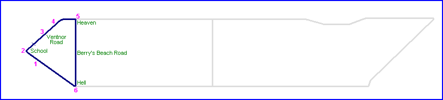
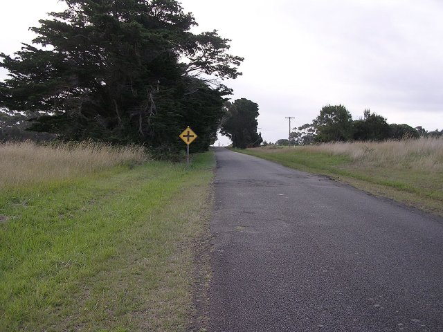
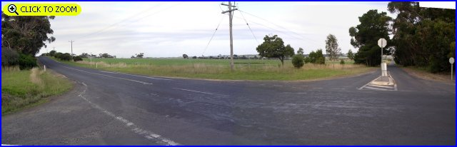
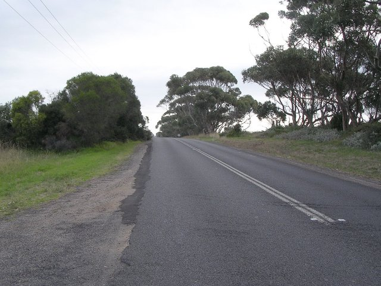
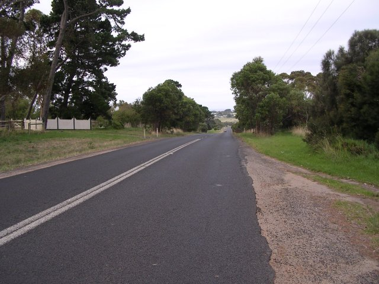
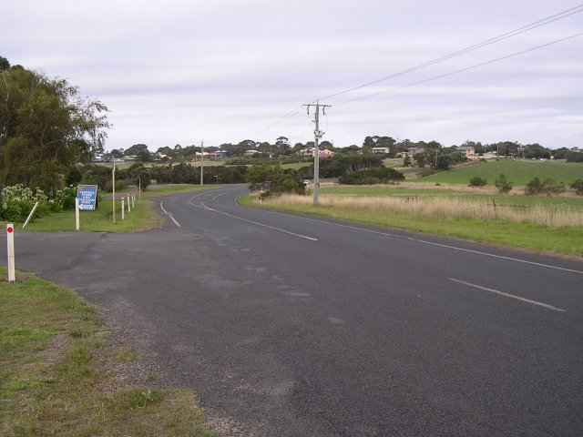
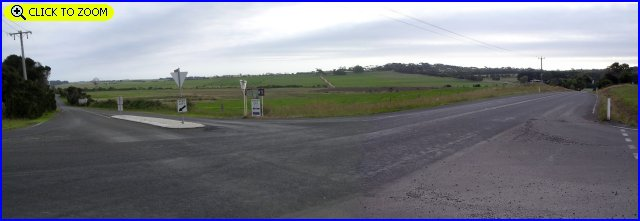
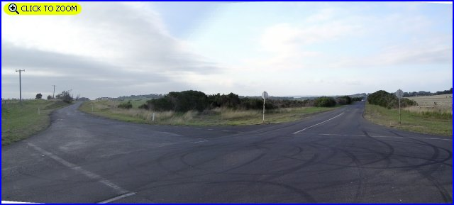

Phillip Island (1936-1940 Grand Prix circuit)

Numbers on the map represent the location where the photographs were taken. Scroll
down to view the photographs.
Return to racingcircuits.net's Photo Archive Main Index

1 - Approaching School corner.

2 - Ventnor School corner. [Click here to zoom in]

3A - Ventnor Road over the crest.

3B - 180° from previous photo.

4 - Right sweep on Ventnor Road.

5 - Heaven Corner. [Click here to zoom in]

6 - Hell Corner. [Click here to zoom in]
Photographs and Text ©Neil Fackerell. Reproduced here with kind permission.